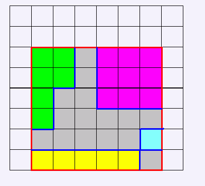

给定你一块矩形板，矩形板是由n*m个1*1的单位元构成的。每次要你从板上切下一块矩形，切割的位置已知，且矩形的长宽与矩形板的长宽垂直或平行，且不会把一个单位元分开。由于可能原有的位置已经被切了很多刀了，你的任务就是每次回答把这块矩形切下来的时候，又切出了多少个连通块？
第1行3个数n,m,p。分别表示矩形板的大小，和你要切的刀数。 接下来p行，每行4个数：x1,y1,x2,y2。表示每次要切的矩形的位置。
一共p行，每行一个数，表示要切出的连通块数。
3 3 2 1 2 3 2 2 1 2 3
1 2 在这个图中，假设灰色部分一被割下，那么如果切出红色矩形，一共切出了4块。 数据范围约定：N,m<=1000,p<=100000 